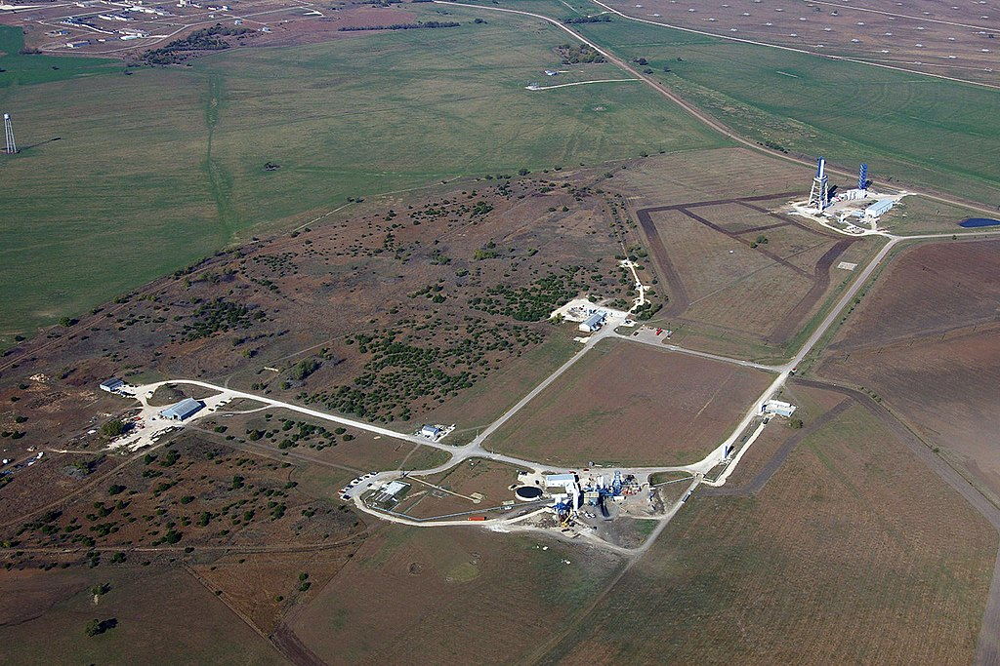
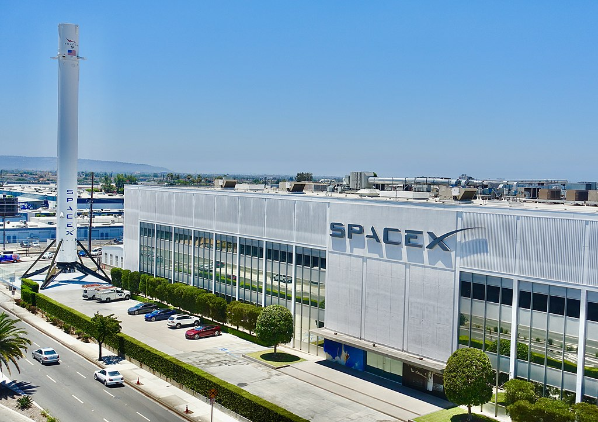

Space Exploration Technologies Corp. (doing business as SpaceX) is an American spacecraft manufacturer, space launch provider, and a satellite communications corporation headquartered in Hawthorne, California. It was founded in 2002 by Elon Musk, with the goal of reducing space transportation costs to enable the colonization of Mars. It manufactures the Falcon 9 and Falcon Heavy launch vehicles, several rocket engines, Cargo Dragon, crew spacecraft, and Starlink communications satellites.
SpaceX is developing a satellite internet constellation named Starlink to provide commercial internet service. In January 2020, the Starlink constellation became the largest satellite constellation ever launched, and as of September 2022 comprises over 3,000 small satellites in orbit. The company is also developing Starship, a privately funded, fully reusable, super heavy-lift launch system for interplanetary and orbital spaceflight. It is intended to become SpaceX's primary orbital vehicle once operational, supplanting the existing Falcon 9, Falcon Heavy, and Dragon fleet. It will have the highest payload capacity of any orbital rocket ever built on its debut, scheduled for 2022 pending launch license.
SpaceX has developed three launch vehicles. The small-lift Falcon 1 was the first launch vehicle developed and was retired in 2009. The medium-lift Falcon 9 and the heavy-lift Falcon Heavy are both operational. The Falcon 1 was a small rocket capable of placing several hundred kilograms into low Earth orbit. It launched five times between 2006 and 2009, of which 2 were successful. The Falcon 1 was the first privately funded, liquid-fueled rocket to reach orbit.
SpaceX has developed the Dragon spacecraft to transport cargo and crew to the International Space Station. The first version of Dragon, used only for cargo, was first launched in 2010.[42] The currently operational second generation Dragon spacecraft, known as Dragon 2, conducted its first flight, without crew, to the ISS in early 2019, followed by a crewed flight of Dragon 2 in 2020.The cargo variant of Dragon 2 flew for the first time in December 2020, for a resupply to the Space Station as part of the CRS contract with NASA.
SpaceX Headquarters is located in the Los Angeles suburb of Hawthorne, California. The large three-story facility, originally built by Northrop Corporation to build Boeing 747 fuselages, houses SpaceX's office space, mission control, and Falcon 9 manufacturing facilities.
The area has one of the largest concentrations of space sector headquarters, facilities, and/or subsidiaries in the U.S., including Boeing/McDonnell Douglas main satellite building campuses, Aerospace Corp., Raytheon, NASA's Jet Propulsion Laboratory, United States Space Force's Space Systems Command at Los Angeles Air Force Base, Lockheed Martin, BAE Systems, Northrop Grumman, and AECOM, etc., with a large pool of aerospace engineers and recent college engineering graduates.